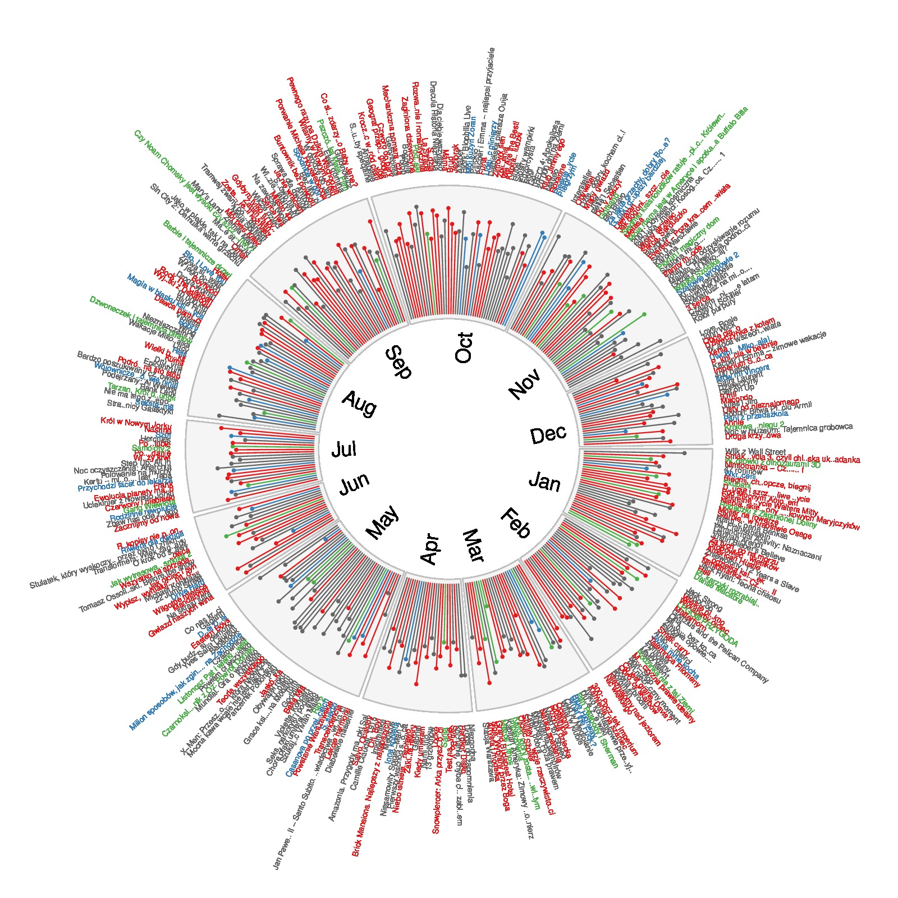

Premiers in Poland of movies from 2014
Example is provided by Przemyslaw Biecek
source code is from https://gist.github.com/pbiecek/9c8263e9949e46b964db
library(archivist)
library(circlize)
library(RColorBrewer)
k <- brewer.pal(3,"Set1")
#
# plot
#
movies2014 <- archivist::aread("pbiecek/graphGallery/1f22770967c8b87c1b9028957055eff2")
movies2014$nazwy <- sapply(strsplit(as.character(movies2014$nazwy), split="(", fixed=T),
`[`, 1)
# colors
colors <- sapply(sort(-table(movies2014$gatunki)), as.character)
colors[1] <- k[1]
colors[2] <- k[2]
colors[3] <- k[3]
colors[-(1:3)] <- "grey40"
par(mar = c(1,1,1,1)*12, cex = 0.6, xpd=NA)
factors = 1:12
szerokosci <- as.vector(table(movies2014$miesiac))
circos.par(points.overflow.warning = FALSE)
circos.initialize(factors = factors, xlim = c(0, 1), sector.width = szerokosci)
circos.trackPlotRegion(factors = 1:12, ylim = c(2,9),
track.height = 0.5,bg.border = "grey",
bg.col = "grey96")
for (k in 1:12) {
miesiac <- movies2014[movies2014$miesiac==k, ]
for (j in 1:nrow(miesiac)) {
circos.trackPoints(factors = k,
seq(0, 1, length.out = nrow(miesiac))[j],
miesiac$oceny2[j],
1,
col=colors[as.character(miesiac$gatunki[j])],
pch=19)
circos.trackLines(factors = k,
seq(0, 1, length.out = nrow(miesiac))[j],
miesiac$oceny2[j],
1,
col=colors[as.character(miesiac$gatunki[j])],
type="h")
circos.trackText(factors = k,
seq(0, 1, length.out = nrow(miesiac))[j],
10,
miesiac$nazwy[j],
1,
col=colors[as.character(miesiac$gatunki[j])],
facing = "clockwise", niceFacing = TRUE, adj=c(0,0),
cex=0.7)
}
circos.trackText(factors = k,
0.5,
1,
month.abb[k],
1,
facing = "clockwise", niceFacing = TRUE, adj=c(1,1),
cex=1.8)
}
circos.clear()